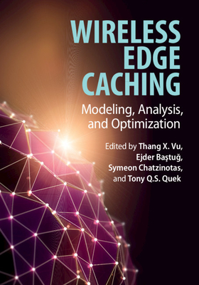
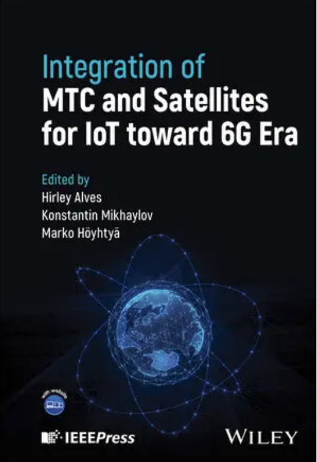

Publications
Book Chapters
 
[1] Jeongho Kwak, Georgios Paschos and George Iosifidis, “Economic Ecosystems in Elastic Wireless Edge Caching," Wireless Edge Caching: Modeling, Analysis, and Optimization, Cambridge University Press, Dec. 2020 [Link].
[2] Taeyeoun Kim, Jeongho Kwak, and Jihwan P. Choi, “6G Satellite Network Architecture with Onboard Computing Capabilities," Integration of MTC and Satellites for IoT toward 6G Era, Wiley Press, 2024.
Selected Journals and Conferences (Full List in Google Scholar) (*: corresponding author, underline: ICNL member)
[Journal] Kyungtae Kim, Joohyun Lee, Jeongho Kwak*, and Yeongjin Kim*, "Cutting-Edge Inference: Dynamic DNN Model Partitioning and Resource Scaling for Mobile AI", IEEE Transactions on Services Computing, Accepted for Publication, Sep. 2024, pp. 1-12 (IF: 5.5, JCR Top 8% in Computer Science, Software Engineering) (ACK: NRF 우수신진, 3D-NET).
[Conference] Jeongsoo Kim, Suhyeon Jeon, and Jeongho Kwak*, "SOS: Dynamic Secure Code Offloading for Power Minimization in LEO Satellite Edge Computing", in Proc. of 22th International Symposium on Modeling and Optimization in Mobile, Ad Hoc, and Wireless Networks (WiOpt), Seoul, Korea, Oct. 2024, pp. 1-8 (ACK: KRIT).
[Journal] Suhyeon Jeon, Jeongho Kwak*, and Jihwan P. Choi*, "An Integration of Cryptography and Physical Layer Security for Multibeam Satellite Systems", IEEE Transactions on Communications, Accepted for Publication, Jul. 2024 (IF: 7.2, JCR Top 8.9% in Engineering, Electrical and Electronic) ISSN: 0090-6778 (ACK: KRIT).
[Workshop] Pyeongjun Choi, Jeongsoo Kim and Jeongho Kwak, "Impact of Joint Heat and Memory Constraints of Mobile Device in Edge-Assisted On-Device Artificial Intelligence," in Proc. of ACM NetAISys (Workshop in ACM MobiSys), Tokyo, Japan, Jun. 2024, pp. 1-6 (ACK: NRF 우수신진).
[Journal] Pyeongjun Choi, Dongho Ham (co-first authors), Yeongjin Kim*, and Jeongho Kwak*, "VisionScaling: Dynamic Deep Learning Model and Resource Scaling in Mobile Computer Vision Applications", IEEE Internet of Things Journal, vol. 11, no. 9, pp. 15523-15539, May 2024 (IF: 10.6, JCR Top 3% in Computer Science, Information Systems) ISSN: 2372-2541 Bronze Prize in Samsung HumanTech 2022. (ACK: NRF 우수신진, IITP 3D-NET).
[Journal] Yeongjin Kim, Pyeongjun Choi, Jeong-A Lim, and Jeongho Kwak*, "Network-Compute Co-Optimization for Service Chaining in Cloud-Edge-Radio 5G Networks", IEEE Transactions on Vehicular Technology, vol. 72, no. 10, pp. 13374-13391, Oct. 2023 (IF: 6.239, JCR Top 14% in Engineering, Electrical & Electronic) ISSN: 0018-9545 Bronze Prize in Samsung HumanTech 2021. (ACK: IITP ITRC).
[Journal] Minsu Kim, Seongjun Kim, Jeongho Kwak and Jemin Lee*, "Semantic-Based Precoding Design for Multi-user MISO Networks", IEEE Wireless Communications Letters, vol. 12, no. 9, pp. 1479-1483, Sep. 2023 (IF: 5.281, JCR Top 20% in Engineering, Electrical & Electronic) ISSN: 2162-2337 (ACK: IITP ITRC).
[Conference] Dongho Ham, Yeongjin Kim and Jeongho Kwak, "Dynamic Interplay Between Service Caching and Code Offloading in Mobile-Edge-Cloud Networks," in Proc. of IEEE SECON, Madrid, Spain, Sep. 2023, pp. 334-342 (BK21+우수국제학술대회) (Acceptance Ratio: 23.6%=43/182) (ACK: HRHR, NRF 우수신진).
[Journal] Hyung-Seok Park, Sihoon Moon, Jeongho Kwak* and Kyung-Joon Park*, "CAPL: Criticality-Aware Adaptive Path Learning for Industrial Wireless Sensor-Actuator Networks," IEEE Transactions on Industrial Informatics (TII), vol. 19, no. 8, pp. 9123-9133, Aug. 2023 (IF: 11.648, JCR Top 2% in Engineering, Industrial) ISSN: 1551-3203 (ACK: IITP 3D-NET).
[Journal] Taeyeoun Kim, Jeongho Kwak* and Jihwan P. Choi*, "Satellite Network Slice Planning: Architecture, Performance Analysis, and Open Issues", IEEE Vehicular Technology Magazine (VTM), vol. 18, no. 2, pp. 29-38, Jun. 2023 (IF: 13.609, JCR Top 2% in Telecommunications) ISSN: 1556-6072 [PDF] (ACK: IITP 3D-NET).
[Journal] Kyungtae Lee, Jinhwi Kim, Jeongho Kwak* and Yeongjin Kim*, "Dynamic Multi-Resource Optimization for Storage Acceleration in Cloud Storage Systems," IEEE Transactions on Services Computing (TSC), vol. 16, no. 2, pp. 1079-1092, Mar. 2023 (IF: 8.216, JCR Top 1% in Computer Science, Software Engineering) ISSN: 2372-0204 (ACK: NRF 우수신진).
[Journal] Yeongjin Kim, Jeongho Kwak, Hyang-Won Lee* and Song Chong, "Dynamic Computation and Network Chaining in Integrated SDN/NFV Cloud Infrastructure," IEEE Transactions on Cloud Computing (TCC), vol. 11, no. 1, pp. 367-382, Jan. 2023 (IF: 5.938, JCR Top 10% in Computer Science, Theory & Method) (ACK: NRF 기본).
[Journal] Taeyeoun Kim, Jeongho Kwak* and Jihwan P. Choi*, "Satellite Edge Computing Architecture and Network Slice Scheduling for IoT Support," IEEE Internet of Things (IoT) Journal, vol. 9, no. 16, pp. 14938-14951, Aug. 2022 (IF: 9.471, JCR Top 4% in Computer Science, Information Systems) ISSN: 2372-2541 (ACK: NRF 기본).
[Journal] Suhyeon Jeon, Jeongho Kwak* and Jihwan P. Choi*, "Cross-Layer Encryption of CFB-AES-TURBO for Advanced Satellite Data Transmission Security," IEEE Transactions on Aerospace and Electonic Systems (TAES), vol. 58, no. 3, pp. 2192-2205, June 2022 (IF: 4.102, JCR Top 8% in Engineering, Aerospace) ISSN: 0018-9251 (ACK: NRF 기본).
[Journal] Yeongjin Kim, Jeahwan Jeong, Suyoung Ahn, Jeongho Kwak* and Song Chong, "Energy and Delay Guaranteed Joint Beam and User Scheduling Policy in 5G CoMP Networks," IEEE Transactions on Wireless Communications (TWC), vol. 21, no. 4, pp. 2742-2756, Apr. 2022 (IF: 7.016, JCR Top 8% in Engineering, Electrical & Electronic) ISSN: 1536-1276 (ACK: NRF 기본, DGIST Startup Fund).
[Journal] Jeongho Kwak*, Georgios Paschos and George Iosifidis, "Elastic FemtoCaching: Scale, Cache and Route," IEEE Transactions on Wireless Communications (TWC), vol. 20, no. 7, pp. 4174-4189, Jul. 2021 (IF: 7.016, JCR Top 8% in Engineering, Electrical & Electronic) ISSN: 1536-1276 [PDF] (ACK: NRF 기본).
[Journal] Jeongho Kwak, Long Bao Le, George Iosifidis, Kyunghan Lee and Dong In Kim, "Collaboration of Network Operators and Cloud Providers in Software-Controlled Networks," IEEE Network, vol. 34, no. 5, pp. 98-105, Sep. 2020 (IF: 10.693, JCR Top 3% in Telecommunications) ISSN: 0890-8044 [PDF] (ACK: NRF 기본).
[Conference] Eunkyung Kim, Jeongho Kwak, Song Chong, "Exception of Dominant Interfering Beam: Low Complex Beam Scheduling in mmWave Networks," in Proc. of IEEE Wireless Communications and Networking Conference (WCNC), Seoul, Korea, Apr. 2020, pp. 1-6.
[Conference] Jude Vivek Joseph, Jeongho Kwak and George Iosifidis, “Dynamic Computation Offloading in Hierarchical Mobile-Edge-Cloud Computing Systems," in Proc. of IEEE Wireless Communications and Networking Conference (WCNC), Marrakech, Morocco, Apr. 2019, pp. 1-6.
[Journal] Jeongho Kwak, Long Bao Le, Hongseok Kim* and Xianbin Wang, "Two Time-Scale Edge Caching and BS Association for Power-Delay Tradeoff in Multi-Cell Networks," IEEE Transactions on Communications (TCOM), vol. 67, no. 8, pp. 5506-5519, Aug. 2019 (IF: 5.083, JCR Top 15% in Telecommunications) ISSN: 0090-6778 [PDF].
[Journal] Jeongho Kwak, Jihwan Kim* and Song Chong, "Proximity-Aware Location Based Collaborative Sensing for Energy-Efficient Mobile Devices," IEEE Transactions on Mobile Computing (TMC), vol. 18, no. 2, pp. 417-430, Feb. 2019 (IF: 5.577, JCR Top 18% in Telecommunications) ISSN: 1536-1233 [PDF].
[Journal] Eunkyung Kim, Jeongho Kwak* and Song Chong, "Virtual Beamforming and User Scheduling for Sub-Array Architecture in mmWave Networks," IEEE Communications Letters (COMML), vol. 23, no. 1, pp. 168-171, Jan. 2019 (IF: 3.436) [PDF].
[Conference] Jeongho Kwak, Georgios S. Paschos and George Iosifidis, "Dynamic Cache Rental and Content Caching in Elastic Wireless CDNs," in Proc. of 16th International Symposium on Modeling and Optimization in Mobile, Ad Hoc, and Wireless Networks (WiOpt), Shanghai, China, May 2018, pp. 1-8 (Acceptance ratio: 33%)
[Journal] Jeongho Kwak, Yeongjin Kim*, Long Bao Le and Song Chong, "Hybrid Content Caching in 5G Wireless Networks: Cloud versus Edge Caching," IEEE Transactions on Wireless Communications (TWC), vol. 17, no. 5, pp. 3030-3045, May 2018 (IF: 7.016, JCR Top 8% in Engineering, Electrical & Electronic) ISSN: 1536-1276 [PDF]. (Listed as most popular IEEE TWC papers in July 2018), Gold Prize in Samsung HumanTech 2017.
[Journal] Yeongjin Kim, Jeongho Kwak* and Song Chong, "Dual-side Optimization for Cost-Delay Tradeoff in Mobile Edge Computing," IEEE Transactions on Vehicular Technology (TVT), vol. 67, no. 2, pp. 1765-1782, Feb. 2018 (IF: 5.978, JCR Top 12% in Engineering, Electrical & Electronic), ISSN: 0018-9545 [PDF]. Silver Prize in Samsung HumanTech 2016, Qualcomm Innovation Award 2015.
[Conference] Jeongho Kwak, Long Bao Le and Xianbin Wang, "Two Time-Scale Content Caching and User Association in 5G Heterogeneous Networks," in Proc. of IEEE Global Communications Conference (GLOBECOM) - Next-Generation Networking and Internet Symposium, Singapore, Dec. 2017, pp. 1-6.
[Journal] Yeongjin Kim, Jeongho Kwak* and Song Chong, "Dynamic Pricing, Scheduling and Energy Management for Profit Maximization in PHEV Charging Stations," IEEE Transactions on Vehicular Technology (TVT), vol. 66, no. 2, pp. 1011-1026, Feb. 2017 (IF: 5.978, JCR Top 12% in Engineering, Electrical & Electronic ), ISSN: 0018-9545 [PDF].
[Conference] Jeongho Kwak, Joonyoung Moon, Hyang-Won Lee and Long Bao Le, "Dynamic Network Slicing and Resource Allocation for Heterogeneous Wireless Services," in Proc. of IEEE Personal, Indoor, and Mobile Radio Communications (PIMRC), Special Session on Resource-efficient, Reliable and Secure Internet-of-Things in the 5G Era, Montreal, QC, Canada, Oct. 2017, pp. 1-6.
[Conference] Jeongho Kwak, Yeongjin Kim, Long Bao Le and Song Chong, "Hybrid Content Caching for Low End-to-End Latency in Cloud-Based Wireless Networks," in Proc. of IEEE International Conference on Communications (ICC) - Next Generation Networking and Internet Symposium, Paris, France, May 2017, pp. 1-6 (Acceptance Ratio: 30.5%).
[Conference] Jaehwan Jeong, Jeongho Kwak and Song Chong, "Energy-efficient Beam Scheduling for Orthogonal Random Beamforming in Cooperative Networks," in Proc. of 15th International Symposium on Modeling and Optimization in Mobile, Ad Hoc, and Wireless Networks (WiOpt), Paris, France, May 2017, pp. 1-8 (Acceptance Ratio: 33%).
[Journal] Changsik Lee, Jihwan Kim, Jeongho Kwak*, Eunkyung Kim and Song Chong, "Competition-based Distributed BS Power Activation and User Scheduling Algorithm," IEEE/KICS Journal of Communications and Networks (JCN), vol. 19, no. 1, pp. 41-50, Feb. 2017 (IF: 3.24), ISSN: 1229-2370 [PDF].
[Journal] Hyang-Won Lee, Jeongho Kwak* and Long Bao Le, "Robust Power Allocation in Cognitive Radio Networks with Uncertain Knowledge of Interference," IEEE Wireless Communications Letters (WCL), vol. 5, no. 5, pp. 468-471, Oct. 2016 (IF: 4.348, JCR Top 20% in Engineering, Electrical & Electronic), ISSN: 2162-2337 [PDF].
[Journal] Jeongho Kwak, Okyoung Choi*, Song Chong and Prasant Mohapatra, "Processor-Network Speed Scaling for Energy-Delay Tradeoff in Smartphone Applications," IEEE/ACM Transactions on Networking (ToN), vol. 24, no. 3, pp.1647-1660, June. 2016 (IF: 3.56), ISSN: 1063-6692 [PDF]. Silver Prize in Samsung HumanTech 2014, Best Paper in LG Electronics 5G Paper Award.
[Journal] Jeongho Kwak, Yeongjin Kim*, Joohyun Lee and Song Chong, "DREAM: Dynamic Resource and Task Allocation for Energy Minimization in Mobile Cloud Systems," IEEE Journal on Selected Areas in Communications (JSAC) - Series on Green Communications and Networking, vol. 33, no. 12, pp.2510-2523, Dec. 2015 (IF: 9.144, JCR Top 6% in Telecommunications, Listed as top 1% highly cited paper (HCP) in Computer Science from Web of Science), ISSN: 0733-8716 [PDF], Gold Prize in Samsung HumanTech 2015.
[Conference] Yeongjin Kim, Jeongho Kwak and Song Chong, "Dual-side Dynamic Controls for Cost Minimization in Mobile Cloud Computing Systems," in Proc. of 13th International Symposium on Modeling and Optimization in Mobile, Ad Hoc, and Wireless Networks (WiOpt), IIT Bombay, Mumbai, India, May 2015, pp. 443-450 (Acceptance Ratio: 38.8%).
[Conference] Jeongho Kwak, Okyoung Choi, Song Chong and Prasant Mohapatra, "Dynamic Speed Scaling for Energy Minimization in Delay-Tolerant Smartphone Applications," in Proc. of IEEE INFOCOM, Main conference session, Toronto, Canada, Apr. 2014, pp. 2292-2300 (BK21+우수국제학술대회) (Acceptance Ratio: 19.4%=320/1645).
[Conference] Jeongho Kwak, Jihwan Kim and Song Chong, "Energy-Optimal Collaborative GPS Localization with Short Range Communication," in Proc. of 11th International Symposium on Modeling and Optimization in Mobile, Ad Hoc, and Wireless Networks (WiOpt), Tsukuba Science City, Japan, May 2013, pp. 256-263 (Acceptance Ratio: 44.3%).
[Journal] Jeongho Kwak, Kyuho Son*, Yung Yi and Song Chong, "Greening Effect of Spatio-Temporal Power Sharing Policies in Cellular Networks with Energy Constraints" IEEE Transactions on Wireless Communications (TWC), vol. 11, no. 12, pp.4405-4415, Dec. 2012 (IF:7.016, JCR Top 8% in Engineering, Electrical & Electronic), ISSN: 1536-1276 [PDF].
[Conference] Jeongho Kwak, Kyuho Son, Yung Yi and Song Chong, "Impact of Spatio-Temporal Power Sharing Policies on Cellular Network Greening," in Proc. of 9th International Symposium on Modeling and Optimization in Mobile, Ad Hoc, and Wireless Networks (WiOpt), Princeton, NJ, USA, May 2011, pp. 167-174 (Acceptance Ratio: 31.25%=40/128).